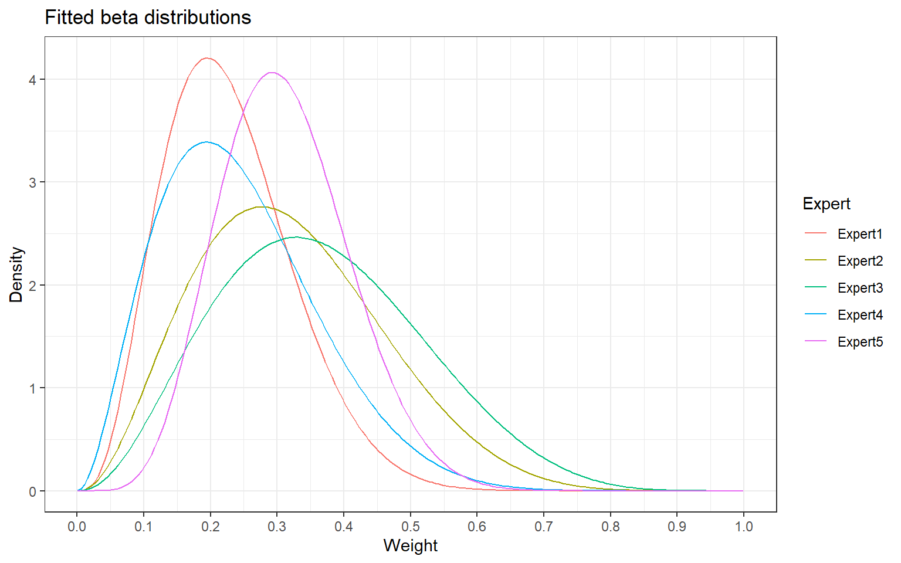
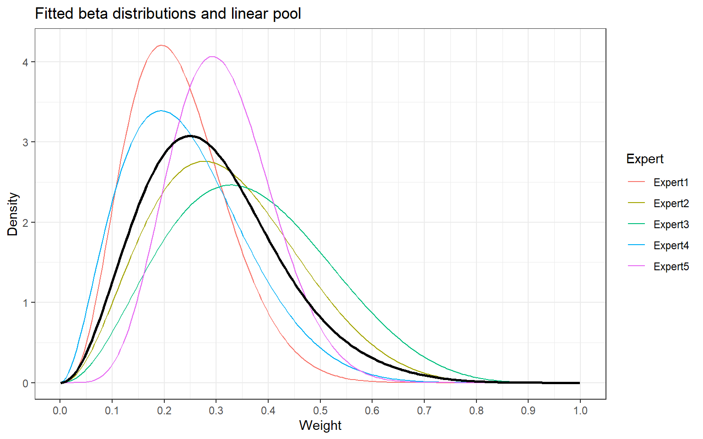

Specifying a primary weight of the informative prior component
Christian Stock
2024-04-04
Source:vignettes/expert_elicitation.Rmd
expert_elicitation.RmdIntroduction
In a clinical trial project that uses Bayesian dynamic borrowing via meta-analytic predictive (MAP) priors, ideally a pre-specified weight of the informative component of the MAP prior needs to be determined (Ionan et al. (2023)). Expert elicitation is a way through which expert judgement can be formally considered for statistical inference and decision making and it can be used to determine this weight.
For reviews on expert elicitaton see e.g. Brownstein et al. (2019) and O’Hagan (2019), and for experiences with expert elicitation in drug development see e.g. Dallow et al. (2018).
The Sheffield elicitation framework (SHELF) is an established framework that is used for the conduct of expert elicitation (O’Hagan (2019), Gosling (2018), Best et al. (2020)), and the SHELF package is available to facilitate implementation in R (The Sheffield Elicitation Framework (2019)).
This vignette provides a brief description of how expert elicitation can be used in a Bayesian borrowing analysis using robust MAP priors. It is not a description of the expert elicitation process, it shows how elicited data can be processed. It is based on and closely resembles functions in the SHELF package, but is much more limited, in the sense that it only considered determination of one weight parameter (a variable on the scale [0,1]).
The data in this example are hypothetical data.
Loading the tipmap package and
set.seed:
Expert weightings collected using the roulette method
Here, the expert data are assumed to be collected via the ‘roulette method’ (Gosling (2018), Dallow et al. (2018)). The experts are asked to place 10 chips into a grid to create histogram-like data that reflects their preferred weighting. No particular shape of symmetry is needed.
Data from a single expert:
Fitting beta distributions to expert data
The roulette data are assumed to follow a beta distribution. The
following calculation and fitting of a beta distribution is similar to
an implementation in SHELF::fitdist and yields identical
results.
Data from a single expert:
> # Compute cumulative probabilities
> (x <- get_cum_probs_1exp(chips_1exp))
# [1] 0.1 0.4 0.8 1.0 1.0 1.0 1.0 1.0 1.0 1.0
> # Compute model inputs
> (y <- get_model_input_1exp(x))
# w cum_probs
# 1 0.1 0.1
# 2 0.2 0.4
# 3 0.3 0.8
# 4 0.4 1.0
> # Fit beta distribution
> (fit_1exp <- fit_beta_1exp(df = y)$par)
# alpha beta
# 4.195173 14.182162For multiple experts the individual steps are handled by the
fit_beta_mult_exp-function:
> chips_mult <- rbind(
+ c(1, 3, 4, 2, 0, 0, 0, 0, 0, 0),
+ c(0, 2, 3, 2, 2, 1, 0, 0, 0, 0),
+ c(0, 1, 3, 2, 2, 1, 1, 0, 0, 0),
+ c(1, 3, 3, 2, 1, 0, 0, 0, 0, 0),
+ c(0, 1, 4, 3, 2, 0, 0, 0, 0, 0)
+ )
> beta_fits <- fit_beta_mult_exp(
+ chips_mult = chips_mult
+ )
> beta_fits
#
[38;5;246m# A tibble: 5 × 4
[39m
# alpha beta error convergence
#
[3m
[38;5;246m<dbl>
[39m
[23m
[3m
[38;5;246m<dbl>
[39m
[23m
[3m
[38;5;246m<dbl>
[39m
[23m
[3m
[38;5;246m<lgl>
[39m
[23m
#
[38;5;250m1
[39m 4.20 14.2 0.001
[4m7
[24m
[4m9
[24m TRUE
#
[38;5;250m2
[39m 3.29 6.97 0.001
[4m3
[24m
[4m6
[24m TRUE
#
[38;5;250m3
[39m 3.30 5.70 0.003
[4m9
[24m
[4m9
[24m TRUE
#
[38;5;250m4
[39m 2.99 9.25 0.000
[4m1
[24m
[4m0
[24m
[4m6
[24m TRUE
#
[38;5;250m5
[39m 6.90 15.3 0.001
[4m3
[24m
[4m6
[24m TRUESummary statistics
Summary statistics for a single expert:
> (alpha <- fit_1exp[1]); (beta <- fit_1exp[2])
# alpha
# 4.195173
# beta
# 14.18216
>
> # Mean
> (beta_mean <- alpha/(alpha+beta))
# alpha
# 0.2282797
>
> # Standard deviation
> beta_sd <- sqrt( (alpha*beta)/( (alpha+beta)^2 *(alpha+beta+1) ) )
> beta_sd
# alpha
# 0.0953491
>
> # Mean absolute deviation around the mean
> beta_mad_mean <- (2*(alpha^alpha)*(beta^beta))/( beta(alpha, beta) * (alpha+beta)^(alpha+beta+1) )
> beta_mad_mean
# alpha
# 0.07648378
>
> # Mode
> if (alpha > 1 & beta >1) beta_mode <- (alpha-1)/(alpha+beta-2)
> if (alpha > 1 & beta >1) beta_mode <- 0.5
> beta_mode
# [1] 0.5
>
> # Quantiles
> qbeta(p = c(0.001, 0.025, 0.05, 0.1, 0.5, 0.9, 0.95, 0.975, 0.99),
+ shape1 = alpha, shape2 = beta)
# [1] 0.03030170 0.07286831 0.08986138 0.11249422 0.21827787 0.35769286 0.40104115
# [8] 0.43928844 0.48403929
>
> # Samples
> x <- rbeta(n = 10^6, shape1 = alpha, shape2 = beta)
> mean(x)
# [1] 0.228191
> sd(x)
# [1] 0.09536257Summary statistics for data from multiple experts:
> expert_samples <- draw_beta_mixture_nsamples(
+ n = 10^3,
+ chips_mult = chips_mult
+ )
> summary(expert_samples)
# Min. 1st Qu. Median Mean 3rd Qu. Max.
# 0.03643 0.19375 0.27175 0.28619 0.35947 0.75872Mean or median values of the pooled distribution may be used as primary weights of the informative component of the robust MAP prior when pre-specifying the Bayesian analysis.
Figures
> # Load libraries
> packages <- c("magrittr", "ggplot2", "tibble", "dplyr")
> invisible(lapply(packages, library, character.only = T))Without linear pooling
> # Create matrix
> fits_mat <- as.matrix(beta_fits[,c(1,2)])
> # Wide format
> fit_beta_mult_plot_wide <- tibble::tibble(
+ x = seq(0.001, 0.999, length = 200),
+ Expert1 = dbeta(x, fits_mat[1,1], fits_mat[1,2]),
+ Expert2 = dbeta(x, fits_mat[2,1], fits_mat[2,2]),
+ Expert3 = dbeta(x, fits_mat[3,1], fits_mat[3,2]),
+ Expert4 = dbeta(x, fits_mat[4,1], fits_mat[4,2]),
+ Expert5 = dbeta(x, fits_mat[5,1], fits_mat[5,2])
+ )
> # Long format
> fit_beta_mult_plot_long <- fit_beta_mult_plot_wide %>%
+ tidyr::pivot_longer(
+ !x,
+ names_to = "Expert",
+ values_to = "dens")> # Plot without linear pool
> fig_betas_1 <- ggplot(
+ data = fit_beta_mult_plot_long,
+ aes(x = x, y = dens, goup = Expert)
+ ) +
+ geom_line(aes(color = Expert)) +
+ ggtitle("Fitted beta distributions") +
+ xlab("Weight") + ylab("Density") +
+ scale_x_continuous(breaks = c(0, 1, 2, 3, 4, 5, 6, 7, 8, 9, 10) / 10) +
+ theme_bw()
> print(fig_betas_1)
With linear pooling
> # Wide format
> fit_beta_mult_plot_wide2 <- fit_beta_mult_plot_wide %>%
+ mutate(linpool = (Expert1 + Expert2 + Expert3 + Expert4 + Expert5)/5)
> # Long format
> fit_beta_mult_plot_long2 <- fit_beta_mult_plot_wide %>%
+ tidyr::pivot_longer(
+ !x,
+ names_to = "Expert",
+ values_to = "dens")> # Plot
> fig_betas_2 <- ggplot(
+ data = fit_beta_mult_plot_long2,
+ aes(x = x, y = dens, group = Expert)) +
+ geom_line(aes(color = Expert ) ) +
+ ggtitle("Fitted beta distributions and linear pool") +
+ xlab("Weight") + ylab("Density") +
+ scale_x_continuous(breaks=c(0,1,2,3,4,5,6,7,8,9,10)/10) +
+ theme_bw() +
+ geom_line(data = fit_beta_mult_plot_wide2,
+ aes(x = x, y = linpool, group = 1),
+ linewidth=1)
> print(fig_betas_2)